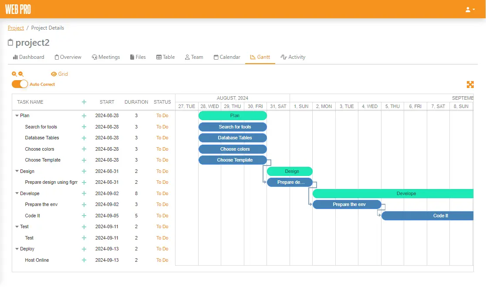
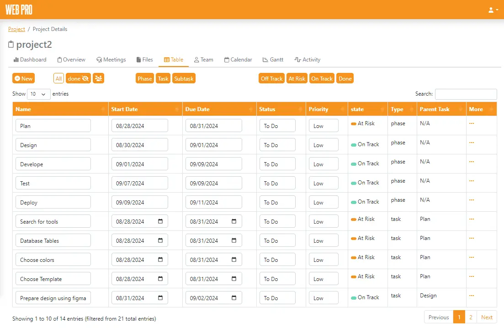
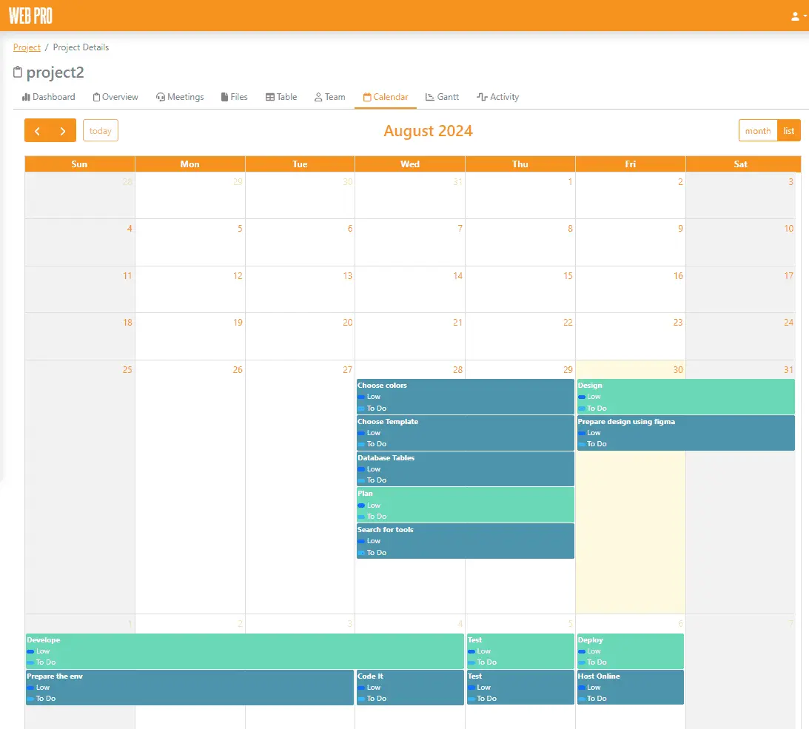
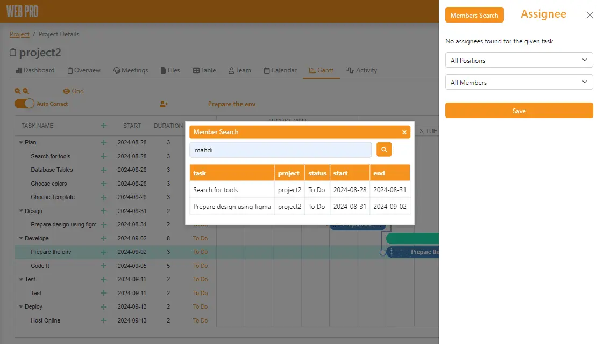
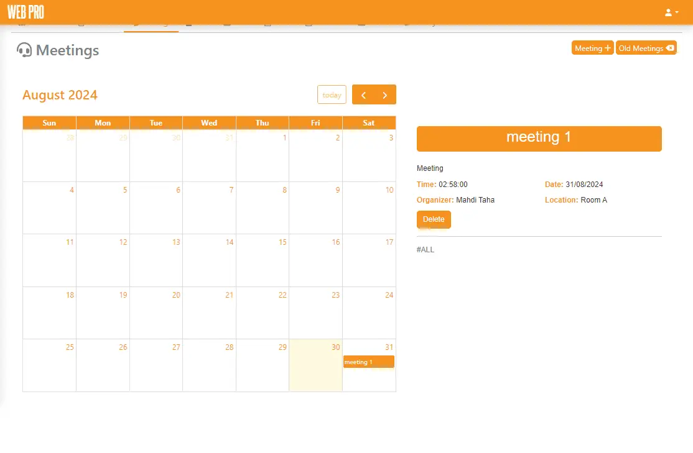

Project Management System
A project management web application designed to organize project phases, tasks, schedules, team assignments and meetings in one structured workspace.

One workspace for planning and tracking projects.
The system brings the important parts of project management together in one place. Projects can be divided into phases, tasks and subtasks, then viewed through structured tables, calendars and Gantt charts.
It also provides interfaces for team assignments, project meetings, task priorities, deadlines and project-health states such as on track, at risk and off track.
Different views for different parts of the workflow.
Task Organization
Organize work into phases, tasks and subtasks with start dates, due dates, priorities and statuses.
Gantt Scheduling
View project tasks across a timeline to understand their duration, order and scheduled dates.
Calendar View
Display project phases and tasks on a calendar for a clear date-based view of the schedule.
Project Health
Classify work as on track, at risk, off track or completed to make its current state visible.
Team Assignments
Search for project members and connect them with the tasks assigned to them.
Meeting Management
Schedule meetings and record their date, time, organizer and location.
Detailed project information in a structured view.
The task table presents names, dates, priorities, statuses, project-health states and parent relationships in one searchable and filterable view.

Tasks can be understood by schedule or calendar date.

Supporting team assignments and project meetings.


Designed and developed as a full-stack application.
I worked on the application structure, database, backend functionality and user interface, bringing the different project-management tools together into one connected system.